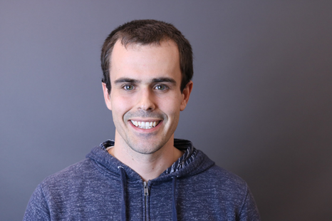
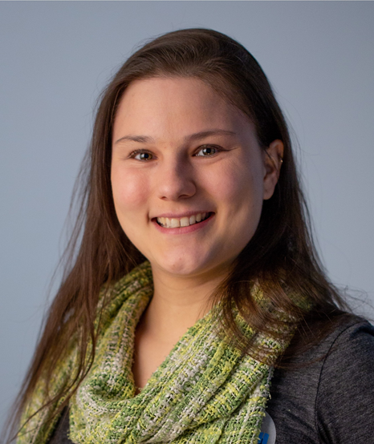
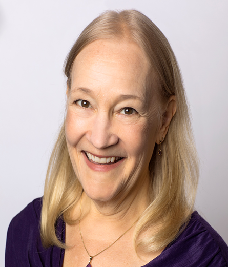

CGO Industry Panel: From Research to Practice in Emerging Domains
Monday, February 18th from 2 pm to 3:40 pm.
About
The goal of the CGO industry panel on “From Research to Practice in Emerging Domains” is to foster new opportunities for collaboration between the CGO research community and the industry. Through the panel, we hope to identify new challenges that are arising in bringing compiler technology from research to practice, especially as new application domains continue to emerge and old ones continue to evolve. Areas like computer vision, machine learning and quantum computing, coupled with advances in hardware, are changing the landscape of compiler technology and reinvigorating the field. To keep pace with these advances, CGO this year has invited four well-known panelists from industry to discuss research opportunities in these areas, and identify new avenues for compiler research that they think CGO should address. Join us and learn where you think the field is heading, and how as a member of the CGO community you can produce research that is relevant to our future needs.
Panelists
| Chris Lattner | Chris is the lead architect of the LLVM Compiler project, and driving the design and implementation of LLVM, Clang and Swift for a number of years. He leads the Google TensorFlow compiler infrastructure teams, including work on XLA, MLIR, and accelerator support projects. |
|  Greg Diamos | Greg Diamos is an AI research lead at Baidu’s Silicon Valley AI Lab (SVAIL), where he helped develop the Deep Speech and Deep Voice systems. Before Baidu, Greg contributed to the design of compiler and microarchitecture technologies used in the Volta GPU at NVIDIA, including the invention of the SIMT independent thread scheduling system. Greg holds a PhD from the Georgia Institute of Technology, where he led the development of the GPU-Ocelot dynamic compiler, which targeted CPUs and GPUs from the same program representation. |
| Jakob Olesen | Jakob Olesen is a software engineer at Facebook, where he builds Glow compiler code generators for machine learning accelerators. Prior to joining Facebook, Jakob started the Cranelift WebAssembly compiler project at Mozilla, and worked on LLVM register allocation and code generation at Apple. Before moving to the US, Jakob worked with signal processing for digital communications in Denmark. Jakob holds a master's degree in mathematics from Aarhus University. |
|  Bettina Heim | Bettina Heim is a quantum physicist and software engineer working in the Quantum Architectures and Computation group at Microsoft. She is leading the design of the quantum programming language Q# and is responsible for the development of the Q# compiler. Prior to joining Microsoft she worked on quantum algorithms, adiabatic quantum computing, discrete optimization problems, and the simulation and benchmarking of quantum computing devices. |
Moderators
| Vijay Janapa Reddi | Vijay Janapa Reddi is an Associate Professor in John A. Paulson School of Engineering and Applied Sciences at Harvard University. His research interests include computer architecture and runtime systems, specifically in the context of mobile and edge computing to improve their performance, power efficiency, and reliability. |
|  Carol Eidt | Carol Eidt is a lead developer on the RyuJIT compiler for .NET at Microsoft, continuing a lifetime passion for code transformation and performance. She joined Microsoft in November 2005, after 22 years at HP, where she was the first female Fellow in the company. Her career has encompassed compiler optimization, code generation, instruction set architecture, dynamic translation, and systems management software. |